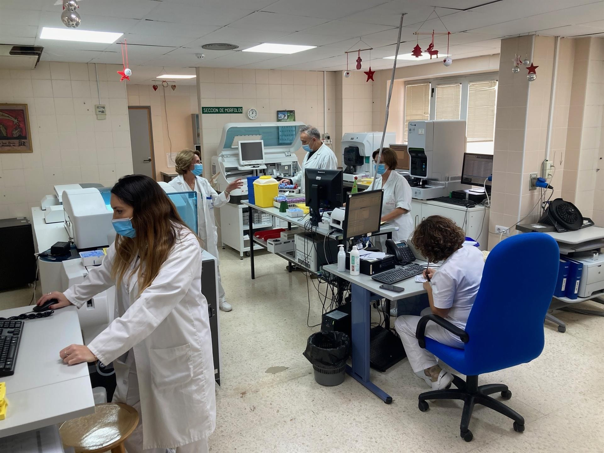
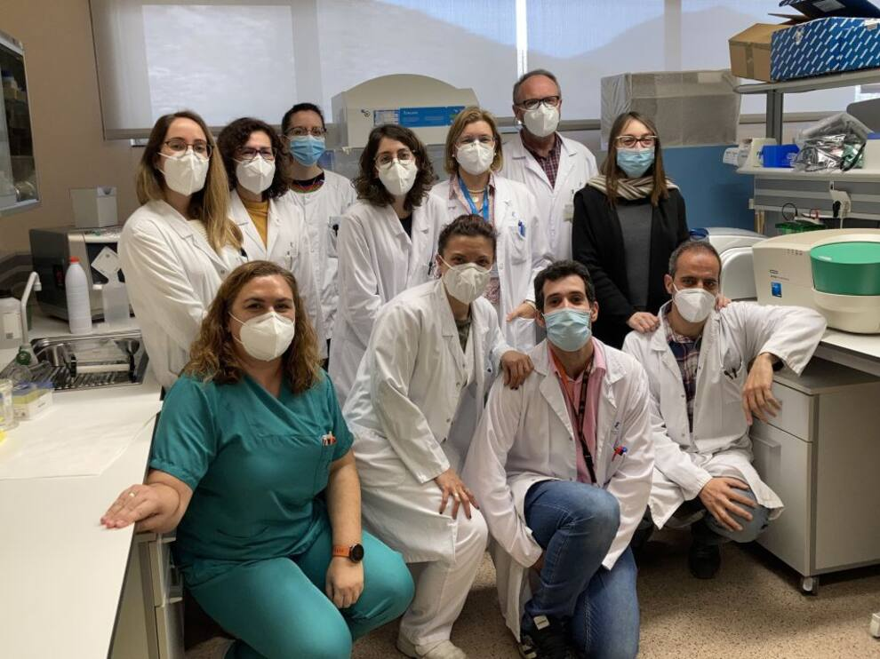

Los laboratorios de Análisis Clínicos de los hospitales Santa Lucía
y Rosell renuevan su certificado de calidad

MURCIA (EP). El Laboratorio del Complejo Hospitalario General Universitario de Cartagena ha renovado por tercera vez la certificación ISO 9001:2015, lo que, según su jefa de servicio, María Dolores Albaladejo Otón, "consolida el trabajo que estamos realizando en nuestro servicio que se encuentra a la cabeza en cuanto a vanguardia y calidad", según informaron fuentes del Área II de Salud.
La renovación de esta certificación asegura la gestión de la calidad de los laboratorios del Hospital Santa Lucía y Rosell en distintos aspectos, como son la organización preanalítica, analítica y postanalítica, la formación del personal y su competencia, las infraestructuras técnicas y estructurales y la distribución en áreas funcionales, entre otros.
Igualmente, asegura otros procesos, como son el mantenimiento, los sistemas de información, la bioseguridad en cuanto a recolección, manipulación, transporte y conservación de muestras, así como el manejo de residuos de acuerdo a la normatividad vigente.
Como puntos fuertes, el informe de auditoría ha reflejado también la implicación del personal en el Sistema de Gestión de la Calidad, los registros de las temperaturas de las neveras de transporte de muestras que proceden de Atención Primaria, la comunicación directa de los valores críticos y el mantenimiento de las infraestructuras por parte del hospital.
El Hospital de Santa Lucía es pionero en detectar en sangre posibles recaídas en los pacientes oncológicos

Cartagena El Hospital General Universitario Santa Lucía está desarrollando un proyecto pionero para validar herramientas que permitan predecir posibles recaídas de los pacientes oncológicos a través del ADN libre circulante y que ayuden en el seguimiento adecuado de estos pacientes.
Los servicios de Análisis Clínicos, Anatomía Patológica y Oncología médica del recinto hospitalario de Cartagena, en colaboración con la empresa Roche Diagnostics, están utilizando ADN tumoral circulante para monitorizar los estadios de la enfermedad y poder anticiparse a un empeoramiento del paciente.
Pablo Conesa Zamora, analista clínico y responsable del Laboratorio de Diagnóstico Molecular del Hospital Santa Lucía, explica que el tipo de muestra que se recoge "se conoce como biopsia líquida y nos permite detectar el ADN tumoral que circula en sangre utilizando una técnica PCR muy sensible que se denomina PCR digital".
En Puente Alto: Centro de Innovación Clínica Áncora San Francisco se inaugurará en marzo 2023
Autoridades de la Universidad Católica, de Fundación Los Cedros y de la Red de Salud UC CHRISTUS visitaron el avance de las obras del futuro Centro de Innovación Clínica Áncora San Francisco, que abrirá sus puertas en marzo de 2023 en la comuna de Puente Alto para sumarse a la atención de pacientes en la zona sur oriente de la capital.
Este Centro nace con la misión de contribuir a transformar el sistema de atención de salud en uno que esté centrado en las personas y que responda de forma efectiva y eficiente a sus principales problemas de salud, a través de la implementación de modelos innovadores de atención que recojan la mejor evidencia y sean replicables en condiciones sustentables para nuestro país.
Este Centro atenderá preferencialmente a población vulnerable del área sur oriente de la Región Metropolitana, partiendo por los beneficiarios de nuestros tres CESFAM Áncora UC de La Pintana y Puente Alto, trabajando coordinadamente con el Servicio de Salud Metropolitano Sur Oriente y con Fonasa.